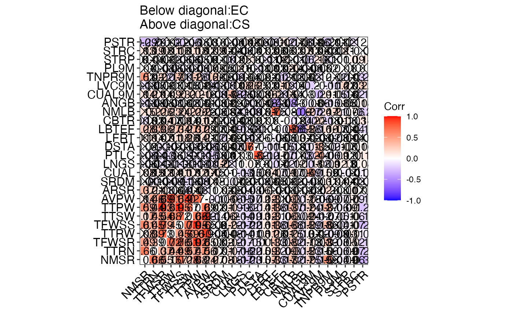

Compute phenotypic correlations (Pearson 1895) between traits, plot correlation matrices as correlograms (Friendly 2002) and calculate mantel correlation (Legendre and Legendre 2012) between them to compare entire collection (EC) and core set (CS).
Arguments
- data
The data as a data frame object. The data frame should possess one row per individual and columns with the individual names and multiple trait/character data.
- names
Name of column with the individual names as a character string.
- quantitative
Name of columns with the quantitative traits as a character vector.
- qualitative
Name of columns with the qualitative traits as a character vector.
- selected
Character vector with the names of individuals selected in core collection and present in the
namescolumn.
Value
A list with the following components.
- Correlation Matrix
The matrix with phenotypic correlations between traits in EC (below diagonal) and CS (above diagonal).
- Correologram
A correlogram of phenotypic correlations between traits in EC (below diagonal) and CS (above diagonal) as a
ggplotobject.- Mantel Correlation
A data frame with Mantel correlation coefficient (\(r\)) between EC and CS phenotypic correlation matrices, it's p value and significance (*: p \(\leq\) 0.01; **: p \(\leq\) 0.05; ns: p \( > \) 0.05).
References
Friendly M (2002).
“Corrgrams.”
The American Statistician, 56(4), 316–324.
Legendre P, Legendre L (2012).
“Interpretation of ecological structures.”
In Developments in Environmental Modelling, volume 24, 521–624.
Elsevier.
Pearson K (1895).
“Note on regression and inheritance in the case of two parents.”
Proceedings of the Royal Society of London, 58, 240–242.
Examples
data("cassava_CC")
data("cassava_EC")
ec <- cbind(genotypes = rownames(cassava_EC), cassava_EC)
ec$genotypes <- as.character(ec$genotypes)
rownames(ec) <- NULL
core <- rownames(cassava_CC)
quant <- c("NMSR", "TTRN", "TFWSR", "TTRW", "TFWSS", "TTSW", "TTPW", "AVPW",
"ARSR", "SRDM")
qual <- c("CUAL", "LNGS", "PTLC", "DSTA", "LFRT", "LBTEF", "CBTR", "NMLB",
"ANGB", "CUAL9M", "LVC9M", "TNPR9M", "PL9M", "STRP", "STRC",
"PSTR")
ec[, qual] <- lapply(ec[, qual],
function(x) factor(as.factor(x)))
corr.evaluate.core(data = ec, names = "genotypes", quantitative = quant,
qualitative = qual, selected = core)
#> Warning: `aes_string()` was deprecated in ggplot2 3.0.0.
#> ℹ Please use tidy evaluation idioms with `aes()`.
#> ℹ See also `vignette("ggplot2-in-packages")` for more information.
#> ℹ The deprecated feature was likely used in the ggcorrplot package.
#> Please report the issue at <https://github.com/kassambara/ggcorrplot/issues>.
#> $`Correlation Matrix`
#> NMSR TTRN TFWSR TTRW TFWSS TTSW TTPW AVPW ARSR
#> NMSR <NA> 0.66** 0.49** 0.08 0.61** 0.17* 0.59** 0.14 0.37**
#> TTRN 0.66** <NA> 0.39** 0.39** 0.45** 0.45** 0.44** 0.46** 0.21**
#> TFWSR 0.55** 0.37** <NA> 0.73** 0.79** 0.54** 0.93** 0.69** 0.11
#> TTRW 0.15** 0.44** 0.72** <NA> 0.45** 0.68** 0.61** 0.91** -0.06
#> TFWSS 0.70** 0.49** 0.76** 0.45** <NA> 0.72** 0.95** 0.64** 0.04
#> TTSW 0.28** 0.57** 0.51** 0.69** 0.71** <NA> 0.67** 0.92** -0.14
#> TTPW 0.68** 0.47** 0.92** 0.60** 0.95** 0.66** <NA> 0.70** 0.08
#> AVPW 0.24** 0.56** 0.65** 0.90** 0.65** 0.93** 0.69** <NA> -0.11
#> ARSR 0.27** 0.17** 0.08** -0.04 -0.02 -0.14** 0.02 -0.10** <NA>
#> SRDM 0.08** 0.01 0.02 -0.04 0.00 -0.06* 0.01 -0.06* 0.03
#> CUAL 0.18** 0.17** 0.12** 0.08** 0.22** 0.20** 0.19** 0.16** 0.05
#> LNGS -0.17** -0.16** -0.17** -0.14** -0.17** -0.14** -0.18** -0.15** -0.04
#> PTLC -0.23** -0.22** -0.15** -0.11** -0.22** -0.19** -0.20** -0.17** -0.08**
#> DSTA -0.15** -0.15** -0.10** -0.08** -0.16** -0.13** -0.14** -0.12** -0.06*
#> LFRT 0.07** 0.09** 0.10** 0.11** 0.11** 0.12** 0.11** 0.12** 0.10**
#> LBTEF 0.33** 0.32** 0.33** 0.26** 0.38** 0.31** 0.38** 0.31** -0.01
#> CBTR -0.17** -0.09** -0.08** 0.01 -0.16** -0.06** -0.13** -0.03 -0.03
#> NMLB 0.32** 0.30** 0.32** 0.25** 0.38** 0.30** 0.37** 0.30** -0.01
#> ANGB -0.17** -0.15** -0.17** -0.13** -0.15** -0.09** -0.17** -0.12** -0.02
#> CUAL9M 0.25** 0.23** 0.13** 0.07** 0.29** 0.24** 0.24** 0.18** -0.02
#> LVC9M -0.19** -0.15** -0.03 0.02 -0.18** -0.12** -0.12** -0.06* -0.02
#> TNPR9M 0.55** 0.06* 0.33** -0.09** 0.36** -0.07** 0.37** -0.09** 0.20**
#> PL9M -0.04 -0.06* -0.08** -0.09** -0.04 -0.05* -0.06* -0.07** -0.00
#> STRP -0.09** -0.09** -0.05* -0.03 -0.10** -0.10** -0.09** -0.07** -0.01
#> STRC 0.06* 0.07** 0.12** 0.11** 0.07** 0.06* 0.10** 0.09** 0.07**
#> PSTR -0.34** -0.27** -0.19** -0.07** -0.29** -0.18** -0.26** -0.14** 0.01
#> SRDM CUAL LNGS PTLC DSTA LFRT LBTEF CBTR NMLB
#> NMSR -0.01 0.08 -0.06 -0.06 -0.02 0.10 0.28** -0.13 0.15
#> TTRN -0.10 0.15 -0.04 -0.14 -0.00 0.14 0.33** 0.03 0.20**
#> TFWSR -0.04 0.12 -0.13 -0.13 -0.10 0.07 0.36** 0.04 0.26**
#> TTRW -0.09 0.14 -0.10 -0.16* -0.07 0.11 0.27** 0.17* 0.23**
#> TFWSS -0.11 0.11 -0.13 -0.05 -0.03 0.18* 0.34** -0.02 0.24**
#> TTSW -0.16* 0.17* -0.10 -0.11 -0.02 0.26** 0.27** 0.14 0.20**
#> TTPW -0.08 0.12 -0.13 -0.10 -0.07 0.14 0.37** 0.01 0.26**
#> AVPW -0.14 0.17* -0.11 -0.15 -0.05 0.21** 0.29** 0.17* 0.23**
#> ARSR 0.08 0.15 -0.12 -0.19* -0.15 0.02 0.07 0.07 -0.02
#> SRDM <NA> -0.01 0.22** -0.04 -0.04 -0.16* -0.04 -0.03 -0.03
#> CUAL -0.07** <NA> -0.11 0.01 0.07 0.09 0.09 -0.04 0.04
#> LNGS 0.03 -0.13** <NA> 0.03 -0.07 -0.01 -0.15* 0.02 -0.10
#> PTLC -0.01 -0.15** 0.07** <NA> 0.67** -0.12 -0.08 -0.02 -0.09
#> DSTA -0.02 -0.06* 0.00 0.82** <NA> -0.06 -0.10 0.01 -0.15
#> LFRT -0.05 0.04 -0.00 -0.12** -0.11** <NA> -0.04 0.01 0.01
#> LBTEF 0.05 0.17** -0.17** -0.17** -0.11** -0.06* <NA> 0.00 0.75**
#> CBTR -0.02 -0.09** 0.02 0.07** 0.05* -0.03 -0.08** <NA> -0.08
#> NMLB 0.03 0.17** -0.12** -0.17** -0.13** -0.03 0.78** -0.12** <NA>
#> ANGB -0.04 -0.05* 0.10** 0.03 0.01 0.07** -0.55** 0.04 -0.60**
#> CUAL9M -0.07** 0.49** -0.18** -0.20** -0.10** 0.02 0.28** -0.20** 0.27**
#> LVC9M -0.03 -0.15** 0.12** 0.44** 0.35** -0.03 -0.16** 0.20** -0.24**
#> TNPR9M 0.11** 0.09** -0.09** -0.06* -0.02 -0.02 0.16** -0.18** 0.17**
#> PL9M 0.04 -0.00 0.12** -0.09** -0.10** -0.08** 0.17** -0.01 0.21**
#> STRP 0.04 -0.07** 0.13** 0.12** 0.07** -0.01 -0.04 0.10** -0.07**
#> STRC 0.03 -0.01 0.00 0.01 -0.01 0.04 0.04 -0.03 0.06*
#> PSTR -0.05 -0.08** 0.08** 0.10** 0.06** -0.01 -0.16** 0.14** -0.20**
#> ANGB CUAL9M LVC9M TNPR9M PL9M STRP STRC PSTR
#> NMSR -0.13 0.14 -0.13 0.53** 0.01 0.00 0.13 -0.29**
#> TTRN -0.09 0.21** -0.07 0.03 -0.00 0.04 0.19* -0.29**
#> TFWSR -0.05 0.14 -0.02 0.22** -0.03 -0.02 0.18* -0.10
#> TTRW -0.01 0.09 0.01 -0.17* -0.05 0.03 0.11 0.02
#> TFWSS -0.06 0.23** -0.01 0.31** -0.08 -0.06 0.16* -0.20*
#> TTSW 0.02 0.20* 0.05 -0.11 -0.07 -0.06 0.11 -0.06
#> TTPW -0.05 0.20** -0.02 0.28** -0.06 -0.05 0.18* -0.16*
#> AVPW 0.01 0.16* 0.04 -0.15* -0.07 -0.02 0.12 -0.03
#> ARSR -0.03 -0.03 -0.13 0.26** 0.05 -0.00 0.09 -0.00
#> SRDM -0.02 -0.14 -0.05 0.05 0.05 0.01 0.12 0.00
#> CUAL 0.09 0.38** -0.11 -0.02 -0.02 -0.12 0.04 -0.04
#> LNGS -0.01 -0.25** 0.08 -0.15 0.11 0.05 -0.02 -0.04
#> PTLC -0.10 -0.07 0.26** 0.04 0.00 0.10 -0.04 0.08
#> DSTA -0.04 -0.03 0.25** -0.02 -0.11 0.00 0.01 0.06
#> LFRT 0.08 0.06 0.03 0.02 -0.01 -0.11 0.03 -0.08
#> LBTEF -0.43** 0.20** 0.01 0.01 0.03 -0.02 0.06 -0.10
#> CBTR -0.08 -0.15 0.19* -0.21** 0.02 0.10 0.06 0.12
#> NMLB -0.43** 0.14 -0.14 0.02 0.14 -0.01 0.03 -0.17*
#> ANGB <NA> -0.03 0.00 -0.05 -0.04 -0.06 0.07 0.06
#> CUAL9M -0.08** <NA> -0.20** 0.03 -0.04 -0.20** 0.13 -0.13
#> LVC9M 0.06* -0.29** <NA> -0.12 -0.05 0.16* 0.06 0.06
#> TNPR9M -0.15** 0.11** -0.11** <NA> 0.02 -0.10 0.03 -0.21**
#> PL9M -0.08** 0.05* -0.14** 0.02 <NA> -0.01 -0.02 0.01
#> STRP 0.05* -0.16** 0.22** -0.11** 0.01 <NA> 0.11 0.02
#> STRC -0.01 0.02 0.03 0.03 0.00 0.09** <NA> -0.12
#> PSTR 0.08** -0.17** 0.22** -0.21** -0.00 0.14** -0.01 <NA>
#>
#> $Correologram

#>
#> $`Mantel Correlation`
#> r p.value significance
#> 1 0.9489496 0.001 **
#>